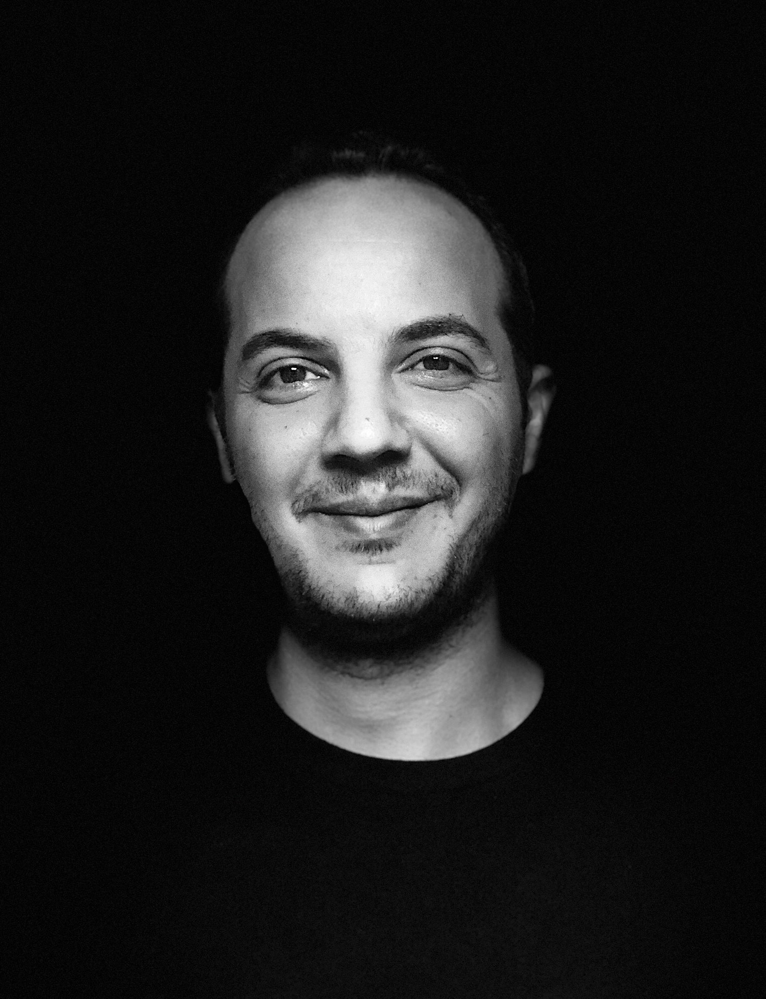
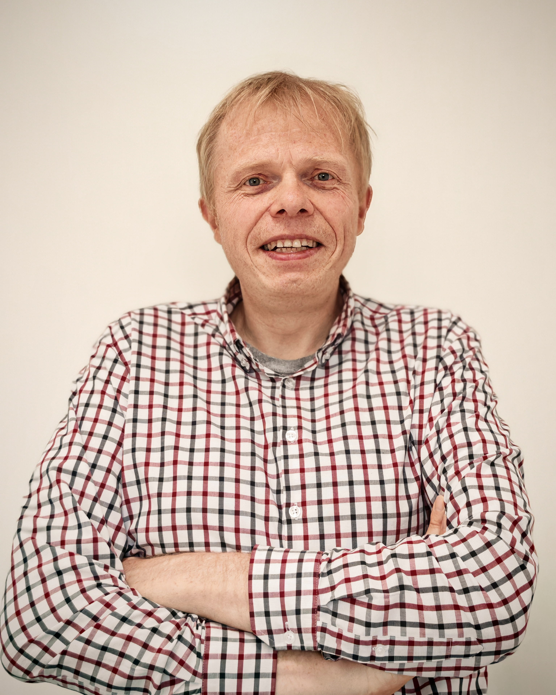

HeiChips carries on the
FPGA-Ignite Summer School series as we are now looking into
microelectronics much beyond just FPGAs (which was a focus in
the first three issues).
HeiChips is a one-week opportunity for networking, exciting lectures and a hackathon on designing a custom
chip (that will be subsequently taped-out on the IHP 130nm CMOS5L Open Source PDK)
The HeiChips Summer School is kindly supported by Heidelberg
University, BMFTR
and Chipdesign
Germany. Attending the event and all social activities is free of charge. However,
participants have to arrange travel and accommodation on their own.
The free and open-source hardware (FOSH) community has achieved remarkable progress over just the last few
years and we have now an ecosystem that is growing fast in ease-of-use, quality and features. HeiChips will
address this with classes covering a wide spectrum of topics, including PDK design, analog and digital
design but also pad-ring design and everything that is required for a successful tapeout.
Application
Thanks to support from BMFTR, HeiChips 2026 is free
of charge to attend. (Attendees will have to arrange/pay travel and accommodation on their own.) The Central
Hotel and the Ibis are in walking distance to the main train station and the venue and usually reasonably
priced)
While HeiChips is free of charge, we invite participants from industry or participants in a more senior role
to help financing HeiCHips by registering here. You can add your registration fee and a recommended figure
for attending the whole week is 300 Euro.
Please fill in the form in this link as soon as possible as the number of seats is limited.
Note that we review applications as they come in and we aim at a one-week turn-around time. Weaker applications
will be pushed back and eventually admitted at a later date. The application process closes July 25th or if
all seats are allocated. Therefore, early applications are suggested (in particular if you have to plan
your travel in advance).
For public transport: leave at bus/tram stop Bunsengymnasium (Bus 31, 37; Tram 21, 24, 25).
Google maps works reasonably well or install the VRN app on your phone.
Hotels
It is usually best to directly book a hotel through a major portal.
Hotel Central and the IBIS are close to the main train station and in walking distance to the campus.
Prof. Dirk Koch
Novel Computing Technologies
Universität Heidelberg
Institut für Technische Informatik (ZITI)
Im Neuenheimer Feld 368, 69120 Heidelberg
dirk.koch@ziti.uni-heidelberg.de
Dr. Riadh Ben Abdelhamid
Novel Computing Technologies
Universität Heidelberg
Institut für Technische Informatik (ZITI)
Im Neuenheimer Feld 368, 69120 Heidelberg
riadh.benabdelhamid@ziti.uni-heidelberg.de
Program
Day 1 (Monday, August 3rd)
9:30
Reception and refreshments
10:00 – 10:30
HeiChips 2026 opening and program introduction
10:30 – 11:30
Poster Pitches
11:30 – 12:00
Poster networking coffee
12:00 – 12:45
Hackathon Introduction (Leo)
12:45 – 14:00
Lunch
14:00 – 15:00
Legal Aspects Open-Source Players Should Know About (Caren Kresse)
15:00 – 15:20
Coffee break
15:20 – 16:20
Introduction into Agentic AI for Hardware Design and Verification
(Riadh Ben Abdelhamid)
16:20
Hike over the Philosophers' Walk and dinner
Day 2 (Tuesday, August 4th)
9:00 – 10:45
LibreLane Intro and Workshop (Leo)
10:45 – 11:00
Coffee break
11:00 – 12:30
Why KLayout Exists and What Is Under the Hood (Matthias) The
engine that drives DRC and LVS
12:30 – 13:30
Lunch
13:30 – 15:00
Introduction into the KLayout Python API (Matthias)
15:00 – 15:30
Coffee break
15:30 – 17:00
Lab: Designing Your Own PCell with the KLayout Python API
(Matthias)
18:00
Dinner at Marstall-Mensa and city tour
Day 3 (Wednesday, August 5th)
9:00 – 9:15
Open-Source Analog Mixed-Signal — Overview (Simon) Overview
of the current landscape of open-source analog mixed-signal tools and recent design
achievements.
9:15 – 10:30
Lab: Open-Source Analog Mixed-Signal — Schematic
(Simon) Xschem: schematic entry. Ngspice: ac, dc, and transient testbenches.
10:30 – 11:00
Coffee break
11:00 – 12:30
Lab: Open-Source Analog Mixed-Signal — Layout
(Simon) KLayout: physical layout, LVS, DRC, parasitic extraction (PEX), and post-layout
simulation.
12:30 – 13:15
Lunch
13:15 – 14:45
Lab: Open-Source Analog Mixed-Signal — Exercises
(Simon) Practical exercises: self-biased amplifier or three-stage ring oscillator with output
buffer.
14:45 – 15:00
Coffee break
15:00 – 17:00
Lab: Hands-on: Python for Hardware Design (Georg) Introduction
to noRTL: create complex digital circuits from Python code using Jupyter notebooks.
17:00
BBQ & Team Forming
Day 4 (Thursday, August 6th)
Hackathon
9:00 – 10:00
Talk and Hackathon Kickoff (Leo & Simon)
10:00 – 10:30
Coffee break
10:30 – 12:30
Hackathon (RTL → Silicon)
12:30 – 13:30
Lunch
13:30
Hackathon (RTL → Silicon)
17:00
Curry for the night shift
Day 5 (Friday, August 7th)
Hackathon
9:00 – 16:30
Hackathon
16:30
Best Project Award and Wrap-Up
Main Support
Lecturers and Keynote speakers (Bio)

Riadh Ben Abdelhamid
Riadh is an Ex-Synopsys FPGA engineer on their flagship FPGA emulation system ZEBU. In 2017, he
was a Japanese Government Scholarship (MEXT) recipient where he obtained his Master and PhD of
Engineering in Computer Science from the University of Tsukuba in March 2020 and 2023
respectively. His research revolves around many-core processor architectures and overlays,
High-Performance Computing and reconfigurable accelerators. He is also enthusiast about making
his own many-core processor chip start-up. Riadh is currently a postdoctoral researcher at the
Novel Computing Technologies Group at Heidelberg University, Germany, where he designed the
SPARKLE architecture that was implemented on a VU9P FPGA with 1,024 RISC-V Barrel Processor
cores and 16,384 interleaved Hardware Threads, delivering a peak 512,000 MIPS on a single FPGA
device.
Simon Dorrer
Simon Dorrer is an internationally recognized electronics expert and researcher at the Institute
of Signal Processing (ISP) at Johannes Kepler University (JKU) Linz. Having graduated with
distinction in Electronics and Information Technology (specializing in IC design, DSP, and RF
technology), his work bridges the gap between analog-mixed-signal circuit design and
cutting-edge microelectronics. Alongside his academic career, he serves as the official
"Electronics Expert" for SkillsAustria, where he designs national competition projects and
trains the next generation of top-tier electronics talents for EuroSkills and WorldSkills.
Georg Gläser
Georg spent a long time designing digital circuits in Verilog. He got his degrees from TU
Ilmenau in collaboration with IMMS Institute for Microelectronics and Mechatronics Systems where
took over the digital design team and is currently the team lead for design methodology. He
focuses on new (and obviously open source) tools for making the design and synthesis process
more efficient and (sometimes) more user friendly.

Dirk Koch
Dirk Koch is an expert in FPGA technology. His group maintains the FABulous open-source eFPGA
framework and various other FPGA-related projects.
His class will briefly introduce the basic concepts of eFPGAs and the FABulous framework.
We will then investigate the methods of using ISA subsetting, hardened custom instructions,
reconfigurable custom instructions and software emulated instructions. We will also learn in
particular how reconfigurable custom instructions can be made available in a CPU core. With this
knowledge, we will run a lab where we will define a custom eFPGA eFPGA and implement custom
instructions on that fabric using the open-source tools Yosys and nextpnr.
Matthias Köfferlein
Matthias Köfferlein is a veteran Software Engineer with more than 25 years of experience in the
semiconductor and EDA industries. He has held senior engineering positions at industry giants
like Carl Zeiss, Qimonda, and Infineon. Matthias is internationally renowned as the creator of
KLayout, a flagship open-source tool utilized worldwide for integrated circuit design and layout
manipulation. As an experienced industry expert and lecturer, he bridges the gap between
hardware and software engineering, making him a premier mentor for students exploring modern
microelectronics and automated layout design.
Caren Kresse
Caren Kresse is the Managing Director and a Board Member at OSADL (Open Source Automation
Development Lab eG). With an extensive background in open-source compliance and technology, she
spearheads critical industry initiatives including the OSADL Open Source Policy project, the
License Obligations Checklists, and the OSSelot curation database. As an experienced speaker and
educator, Caren regularly advises industrial companies on how to navigate the complex legal and
technological landscapes of FOSS, from open-innovation architectures to upcoming regulatory
shifts like the Cyber Resilience Act.
Leo Moser
Leo Moser is an advocate of free and open-source silicon (FOSSi) and aspiring chip designer.
He is part of the FABulous team and is also currently involved with wafer.space.
Leo received his Master's degree from Graz University of Technology, where he designed
Greyhound: a RISC-V SoC with tightly coupled FABulous eFPGA fabricated on IHP's SG13G2 process.
Previously, Leo worked at Efabless, where he focused on PDK enablement for the IHP Open Source
PDK and on analog automation with CACE.
He is excited about the future of the free and open-source silicon community.